Self-attention_P2¶
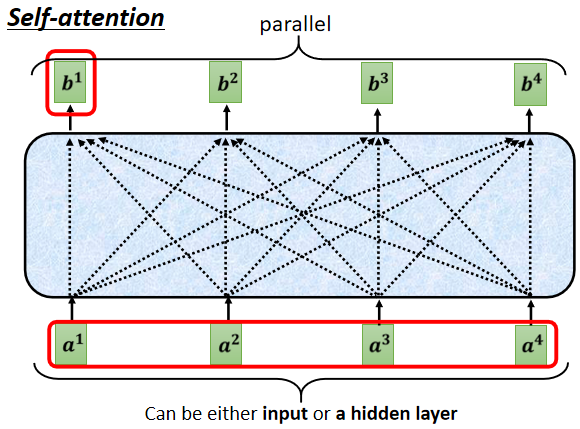
从这一排 vector 得到 \(b^1\)，跟从这一排 vector 得到 \(b^2\)，它的操作是一模一样的.要强调一点是，这边的 \(b^1\) 到 \(b^4\)，它们并不需要依序产生，它们是一次同时被计算出来的
怎么计算这个 \(b^2\)？我们现在的主角，就变成 \(a^2\)
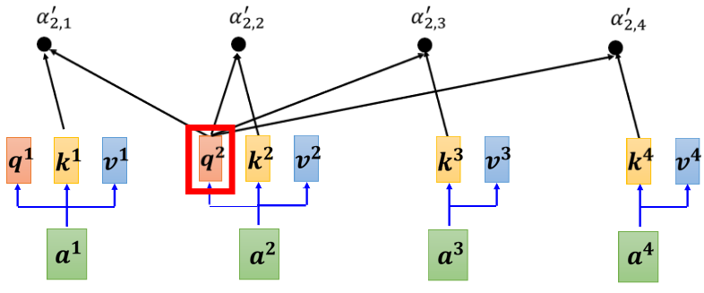
-
把 \(a^2\) 乘上一个 matrix，变成 \(q^2\)
-
然后接下来根据 \(q^2\)，去对\(a^1\)到 \(a^4\) 这四个位置，都去计算 attention 的 score
- 把 \(q^2\) 跟 \(k^1\) 做个这个 dot product
- 把 \(q^2\) 跟 \(k^2\) 也做个 dot product
- 把 \(q^2\) 跟 \(k^3\) 也做 dot product
- 把 \(q^2\) 跟 \(k^4\) 也做 dot product，得到四个分数
-
得到这四个分数以后，可能还会做一个 normalization，比如说 softmax，然后得到最后的 attention 的 score，\(α'_{2，1} \space α'_{2，2} \space α'_{2，3} \space α'_{2，4}\)那我们这边用 \(α'\)表示经过 normalization 以后的attention score
-
接下来拿这四个数值，分别乘上 \(v^1 \space v^2 \space v^3 \space v^4\)
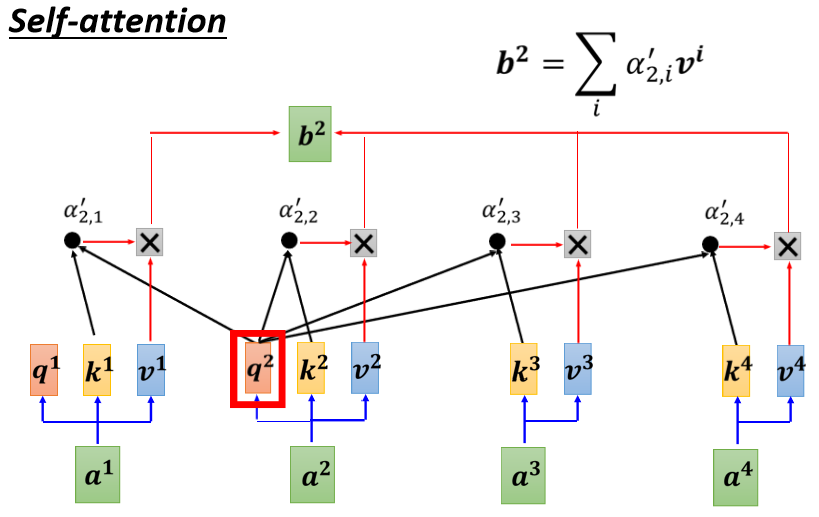
- 把 \(α'_{2，1}\)乘上 \(v^1\)
- 把 \(α'_{2，2}\) 乘上 \(v^2\)
- 把 \(α'_{2，3}\) 乘上 \(v^3\)
- 把 \(α'_{2，4}\) 乘上 \(v^4\)，然后全部加起来就是 $ b^2$
\[ b^2=\sum_iα'_{2，i}v^i \]
同理就可以，由 \(a^3\) 乘一个 transform 得到 \(q^3\)，然后就计算 \(b^3\)，从 \(a^4\) 乘一个 transform 得到 \(q^4\)，就计算 \(b^4\)，以上说的是 Self-attention 它运作的过程
矩阵的角度¶
接下来我们从矩阵乘法的角度，再重新讲一次我们刚才讲的，Self-attention 是怎么运作的
我们现在已经知道每一个 a 都产生 q k v
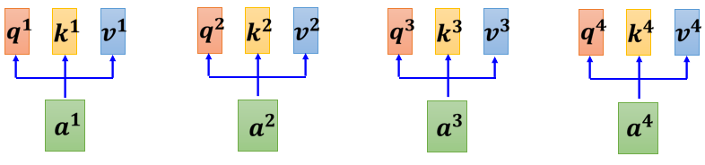
如果要用矩阵运算表示这个操作的话，是什么样子呢
我们每一个 a，都乘上一个矩阵，我们这边用 \(W^q\) 来表示它，得到 \(q^i\)，每一个 a 都要乘上 \(W^q\)，得到\(q^i\)，这些不同的 a 你可以把它合起来，当作一个矩阵来看待
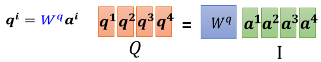
一样$a^2\space a^3\space a^4 \(也都乘上 \(W^q\) 得到\)q^2 q^3 $跟 \(q^4\)，那你可以把 a1 到 a4 拼起来，看作是一个矩阵，这个矩阵我们用 I 来表示，这个矩阵的四个 column 就是 \(a^1\) 到 \(a^4\)
\(I\) 乘上 \(W^q\) 就得到另外一个矩阵，我们用 \(Q\) 来表示它，这个 \(Q\) 就是把 \(q^1\) 到 \(q^4\) 这四个 vector 拼起来，就是 \(Q\) 的四个 column
所以我们从 \(a^1\) 到 \(a^4\)，得到 \(q^1\) 到 \(q^4\)这个操作，其实就是把 I 这个矩阵，乘上另外一个矩阵 \(W^q\)，得到矩阵\(Q\)。\(I\) 这个矩阵它里面的 column就是我们 Self-attention 的 input是 \(a^1\) 到 \(a^4\)；\(W^q\)其实是 network 的参数，它是等一下会被learn出来的 ；\(Q\) 的四个 column，就是 \(q^1\) 到 \(q^4\)
接下来产生 k 跟 v 的操作跟 q 是一模一样的
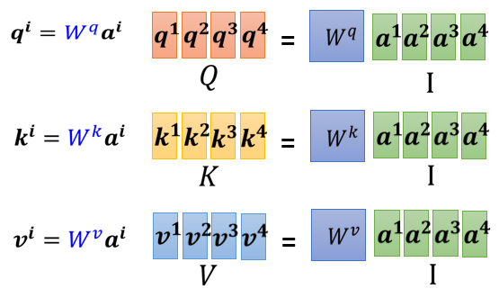
所以每一个 a 得到 q k v ，其实就是把输入的这个，vector sequence 乘上三个不同的矩阵，你就得到了 q，得到了 k，跟得到了 v
下一步是，每一个 q 都会去跟每一个 k，去计算这个 inner product，去得到这个 attention 的分数
那得到 attention 分数这一件事情，如果从矩阵操作的角度来看，它在做什么样的事情呢
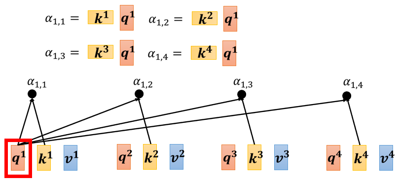
你就是把 \(q^1\) 跟 \(k^1\) 做 inner product，得到 \(α_{1，1}\)，所以 \(α_{1，1}\)就是 \(q^1\) 跟 \(k^1\) 的 inner product，那这边我就把这个，\(k^1\)它背后的这个向量，把它画成比较宽一点代表说它是 transpose
同理 \(α_{1，2}\) 就是 \(q^1\) 跟 \(k^2\)，做 inner product， \(α_{1，3}\) 就是 \(q^1\) 跟 \(k^3\) 做 inner product，这个 \(α_{1，4}\) 就是 \(q^1\) 跟 \(k^4\) 做 inner product
那这个四个步骤的操作，你其实可以把它拼起来，看作是矩阵跟向量相乘
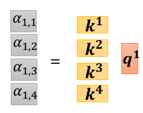
这四个动作，你可以看作是我们把 \(k^1\) 到 \(k^4\) 拼起来，当作是一个矩阵的四个 row
那我们刚才讲过说，我们不只是 \(q^1\)，要对\(k^1\) 到 \(k^4\) 计算 attention，\(q^2，q^3，q^4\)也要对 \(k^1\) 到 \(k^4\) 计算 attention，操作其实都是一模一样的
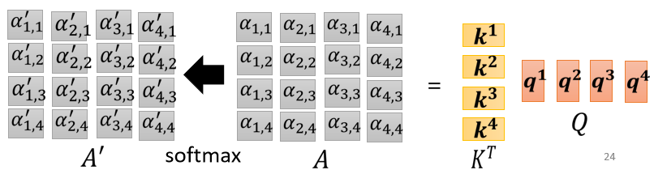
所以这些 attention 的分数可以看作是两个矩阵的相乘，一个矩阵它的 row，就是 \(k^1\) 到 \(k^4\)，另外一个矩阵它的 column
我们会在 attention 的分数，做一下 normalization，比如说你会做 softmax，你会对这边的每一个 column，每一个 column 做 softmax，让每一个 column 里面的值相加是 1
之前有讲过说 其实这边做 softmax不是唯一的选项，你完全可以选择其他的操作，比如说 ReLU 之类的，那其实得到的结果也不会比较差，通过了 softmax 以后，它得到的值有点不一样了，所以我们用 \(A'\)，来表示通过 softmax 以后的结果
我们已经计算出 $A' $
那我们把这个\(v^1\) 到 \(v^4\)乘上这边的 α 以后，就可以得到 b
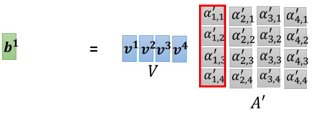
你就把\(v^1\) 到 \(v^4\) 拼起来，你把 \(v^1\) 到 \(v^4\)当成是V 这个矩阵的四个 column，把它拼起来，然后接下来你把 v 乘上，\(A'\) 的第一个 column 以后，你得到的结果就是 \(b^1\)
如果你熟悉线性代数的话，你知道说把这个 \(A'\) 乘上 V，就是把 \(A'\)的第一个 column，乘上 V 这一个矩阵，你会得到你 output 矩阵的第一个 column
而把 A 的第一个 column乘上 V 这个矩阵做的事情，其实就是把 V 这个矩阵里面的每一个 column，根据第 \(A'\) 这个矩阵里面的每一个 column 里面每一个 element，做 weighted sum，那就得到 \(b^1\)
那就是这边的操作，把 \(v^1\) 到 \(v^4\) 乘上 weight，全部加起来得到 \(b^1\)，
如果你是用矩阵操作的角度来看它，就是把$ A'$ 的第一个 column 乘上 V，就得到 \(b^1\)，然后接下来就是以此类推
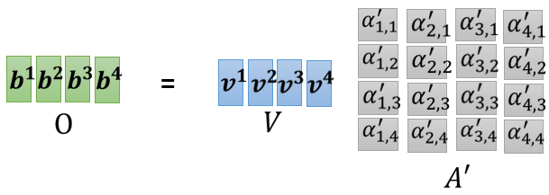
就是以此类推，把 \(A'\) 的第二个 column 乘上 V，就得到 \(b^2\)，\(A'\) 的第三个 column 乘上 V 就得到 \(b^3\)，\(A'\) 的最后一个 column 乘上 V，就得到 \(b^4\)
所以我们等于就是把 \(A'\) 这个矩阵，乘上 V 这个矩阵，得到 O 这个矩阵，O 这个矩阵里面的每一个 column，就是 Self-attention 的输出，也就是 \(b^1\) 到 \(b^4\)，
所以其实整个 Self-attention，我们在讲操作的时候，我们在最开始的时候 跟你讲的时候我们讲说，我们先产生了 q k v，然后再根据这个 q 去找出相关的位置，然后再对 v 做 weighted sum，其实这一串操作，就是一连串矩阵的乘法而已
我们再复习一下我们刚才看到的矩阵乘法
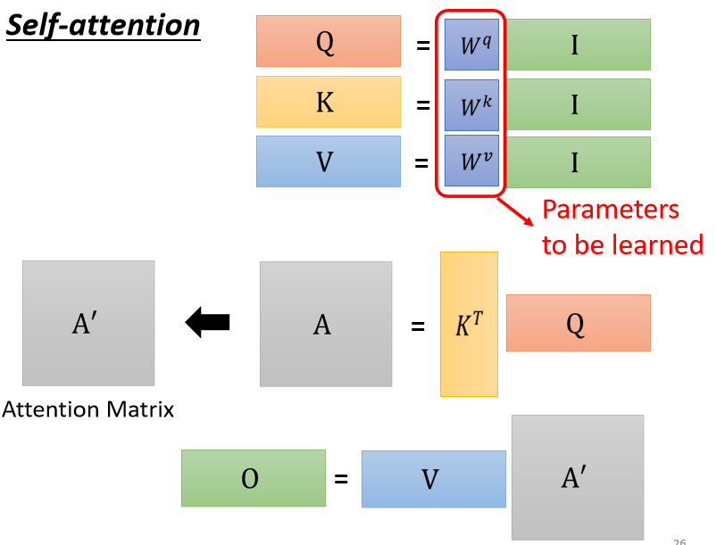
-
I 是 Self-attention 的 input，Self-attention 的 input 是一排的vector，这排 vector 拼起来当作矩阵的 column，就是 I
-
这个 input 分别乘上三个矩阵，\(W^q\) \(W^k\) 跟$ W^v$，得到 Q K V
- 这三个矩阵，接下来 Q 乘上 K 的 transpose，得到 A 这个矩阵，A 的矩阵你可能会做一些处理，得到 \(A'\)，那有时候我们会把这个 \(A'\)，叫做 Attention Matrix，生成Q矩阵就是为了得到Attention的score
- 然后接下来你把 \(A'\) 再乘上 V，就得到 O，O 就是 Self-attention 这个 layer 的输出，生成V是为了计算最后的b，也就是矩阵O
所以 Self-attention 输入是 I，输出是 O，那你会发现说虽然是叫 attention，但是其实 Self-attention layer 里面，唯一需要学的参数，就只有 \(W^q\) \(W^k\) 跟$ W^v$ 而已，只有\(W^q\) \(W^k\) 跟$ W^v$是未知的，是需要透过我们的训练资料把它找出来的
但是其他的操作都没有未知的参数，都是我们人为设定好的，都不需要透过 training data 找出来，那这整个就是 Self-attention 的操作，从 I 到 O 就是做了 Self-attention
Multi-head Self-attention¶
Self-attention 有一个进阶的版本叫做 Multi-head Self-attention， 其实 Multi-head Self-attention 在今天的使用是非常地广泛的
在作业 4 里面，助教原来的 code 4 有 Multi-head Self-attention，它的 head 的数目是设成 2，那刚才助教有给你提示说，把 head 的数目改少一点 改成 1，其实就可以过medium baseline
但并不代表所有的任务，都适合用比较少的 head，有一些任务，比如说翻译，比如说语音辨识，其实用比较多的 head，你反而可以得到比较好的结果
至于需要用多少的 head，这个又是另外一个 hyperparameter，也是你需要调的
那为什么我们会需要比较多的 head 呢，你可以想成说相关这件事情
我们在做这个 Self-attention 的时候，我们就是用 q 去找相关的 k，但是 ==相关==这件事情有很多种不同的形式，有很多种不同的定义，所以也许我们不能只有一个 q，我们应该要有多个 q，不同的 q 负责不同种类的相关性
所以假设你要做 Multi-head Self-attention 的话，你会怎么操作呢?
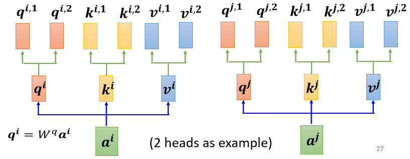
- 先把 a 乘上一个矩阵得到 q
- 再把 q 乘上另外两个矩阵，分别得到 \(q^1\) 跟 \(q^2\)，那这边还有 这边是用两个上标，i 代表的是位置，然后这个 1 跟 2 代表是，这个位置的第几个 q，所以这边有 \(q^{i，1}\) 跟 \(q^{i，2}\)，代表说我们有两个 head
我们认为这个问题，里面有两种不同的相关性，是我们需要产生两种不同的 head，来找两种不同的相关性
既然 q 有两个，那 k 也就要有两个，那 v 也就要有两个，从 q 得到 \(q^1 q^2\)，从 k 得到 \(k^1 k^2\)，从 v 得到 \(v^1 v^2\)，那其实就是把 q 把 k 把 v，分别乘上两个矩阵，得到这个不同的 head，就这样子而已，
对另外一个位置，也做一样的事情
只是现在\(q^1\)，它在算这个 attention 的分数的时候，它就不要管那个 \(k^2\) 了
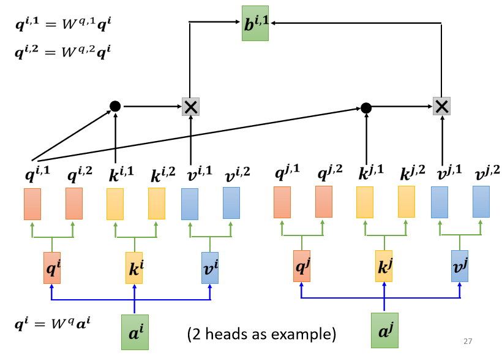
-
所以 \(q_{i，1}\) 就跟 \(k^{i，1}\) 算 attention
-
\(q_{i，1}\) 就跟 \(k^{j，1}\) 算 attention，也就是算这个 dot product，然后得到这个 attention 的分数
- 然后今天在做 weighted sum 的时候，也不要管 \(v^2\) 了，看 \(V^{i，1}\) 跟 \(v^{j，1}\) 就好，所以你把 attention 的分数乘 \(v^{i，1}\)，把 attention 的分数乘 \(v^{j，1}\)
- 然后接下来就得到 \(b^{i，1}\)
这边只用了其中一个 head，那你会用另外一个 head，也做一模一样的事情
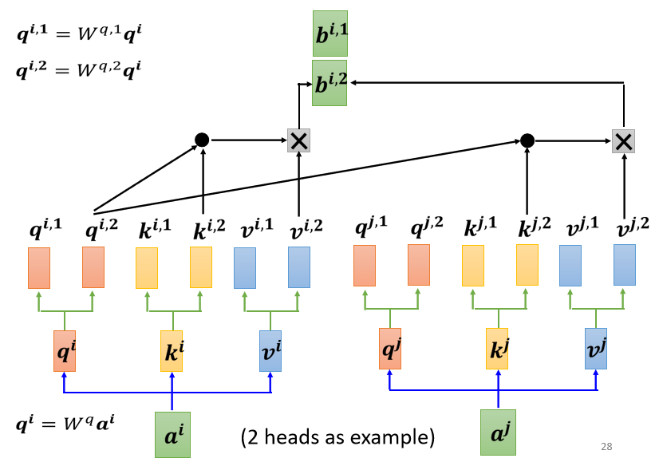
所以 \(q^2\) 只对 \(k^2\) 做 attention，它们在做 weighted sum 的时候，只对 \(v^2\) 做 weighted sum，然后接下来你就得到 \(b^{i，2}\)
如果你有多个 head，有 8 个 head 有 16 个 head，那也是一样的操作，那这边是用两个 head 来当作例子，来给你看看有两个 head 的时候，是怎么操作的，现在得到 \(b^{i，1}\) 跟 \(b^{i，2}\)
然后接下来你可能会把 \(b^{i，1}\) 跟 \(b^{i，2}\)，把它接起来，然后再通过一个 transform
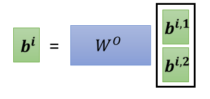
也就是再乘上一个矩阵，然后得到 bi，然后再送到下一层去，那这个就是 Multi-head attention，一个这个 Self-attention 的变形
Positional Encoding¶
No position information in self-attention¶
那讲到目前为止，你会发现说 Self-attention 的这个 layer，它少了一个也许很重要的资讯，这个资讯是位置的资讯
对一个 Self-attention layer 而言，每一个 input，它是出现在 sequence 的最前面，还是最后面，它是完全没有这个资讯的
对 Self-attention 而言，位置 1 跟位置 2 跟位置 3 跟位置 4，完全没有任何差别，这四个位置的操作其实是一模一样，对它来说 q1 到跟 q4 的距离，并没有特别远，1 跟 4 的距离并没有特别远，2 跟 3 的距离也没有特别近
对它来说就是天涯若比邻，所有的位置之间的距离都是一样的，没有任何一个位置距离比较远，也没有任何位置距离比较近，也没有谁在整个 sequence 的最前面，也没有谁在整个 sequence 的最后面
但是这样子设计可能会有一些问题，因为有时候位置的资讯也许很重要，举例来说，我们在做这个 POS tagging，就是词性标记的时候，也许你知道说动词比较不容易出现在句首，所以如果我们知道说，某一个词汇它是放在句首的，那它是动词的可能性可能就比较低，这样子的位置的资讯往往也是有用的
Each positon has a unique positional vector \(e^i\)¶
可是在我们到目前为止，讲的 Self-attention 的操作里面，根本就没有位置的资讯，所以怎么办呢，所以你做 Self-attention 的时候，如果你觉得位置的资讯是一个重要的事情，那你可以把位置的资讯把它塞进去，怎么把位置的资讯塞进去呢，这边就要用到一个叫做，positional encoding 的技术
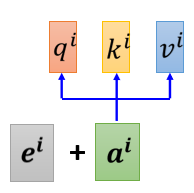
你为每一个位置设定一个 vector，叫做 positional vector，这边用 \(e^i\) 来表示，上标 i 代表是位置，每一个不同的位置，就有不同的 vector，就是 \(e^1\) 是一个 vector，\(e^2\) 是一个vector，\(e^{128}\) 是一个vector，不同的位置都有一个它专属的 e，然后把这个 e 加到 \(a^i\) 上面，就结束了
就是告诉你的 Self-attention，位置的资讯，如果它看到说 \(a^i\) 好像有被加上 $ e^i$，它就知道说现在出现的位置，应该是在 i 这个位置
最早的这个 transformer，就 Attention Is All You Need 那篇 paper 里面，它用的 $ e^i$长的是这个样子
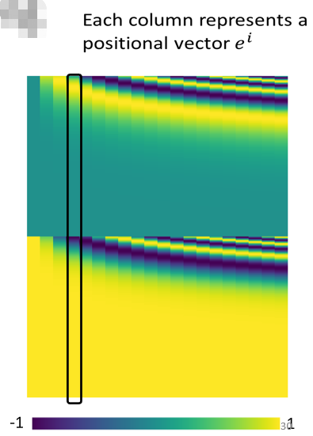
这边这个图上面，每一个 column 就代表一个 e，第一个位置就是 \(e^1\)，第二个位置就是 \(e^2\)，第三个位置就是 \(e^3\)，以此类推
所以它就是把这边这个向量，放在第一个位置，把这个向量加到第二个位置的 a上，把这个向量加到第三个位置的 a 上，以此类推，每一个位置都有一个专属的 e，希望透过给每一个位置不同的 e，你的 model 在处理这个 input 的时候，它可以知道现在的 input，它的位置的资讯是什么样子
Hand-crafted or Learned from data¶
这样子的 positional vector，它是 handcrafted 的，也就是它是人设的，那人设的这个 vector 有很多问题，就假设我现在在定这个 vector 的时候，只定到 128，那我现在 sequence 的长度，如果是 129 怎么办呢
不过在最早的那个，Attention Is All You Need paper里面，没有这个问题，它 vector 是透过某一个规则所产生的，透过一个很神奇的sin cos 的 function 所产生的
其实你不一定要这么产生， positional encoding仍然是一个尚待研究的问题，你可以创造自己新的方法，或甚至 positional encoding，是可以根据资料学出来的
那有关 positional encoding，你可以再参考一下文献，这个是一个尚待研究的问题，比如说我这边引用了一篇，这个是去年放在 arxiv 上的论文，所以可以想见这其实都是很新的论文
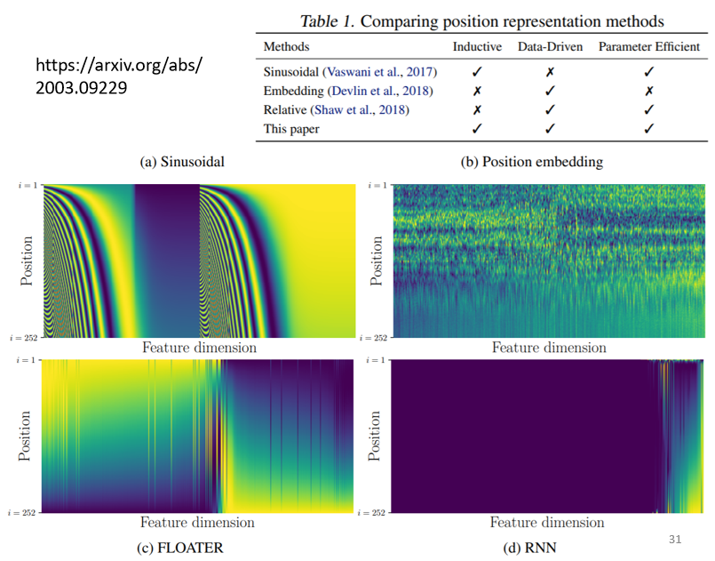
里面就是比较了跟提出了，新的 positional encoding
- 比如说这个是最早的 positional encoding，它是用一个神奇的 sin function 所产生的
- 那如果你的 positional encoding，你把 positional encoding 里面的数值，当作 network 参数的一部分，直接 learn 出来，看起来是这个样子的，这个图是那个横着看的，它是横着看的，它是每一个 row，代表一个 position，好 所以这个是这个最原始的，用 sin function 产生的，这个是 learn 出来的
- 它里面又有神奇的做法，比如说这个，这个是用 RNN 生出来的，positional encording 是用 RNN 出来的，这篇 paper 提出来的叫做 FLOATER，是用个神奇的 network 生出来的，
总之你有各式各样不同的方法，来产生 positional encoding，那目前我们还不知道哪一种方法最好，这是一个尚待研究中的问题，所以你不用纠结说，为什么 Sinusoidal 最好，你永远可以提出新的做法
Applications …¶
Self-attention 当然是用得很广，我们已经提过很多次 transformer 这个东西
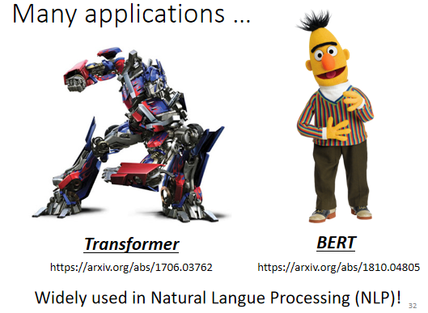
那我们大家也都知道说，在 NLP 的领域有一个东西叫做 BERT，BERT 里面也用到 Self-attention，所以 Self-attention 在 NLP 上面的应用，是大家都耳熟能详的
但 Self-attention，不是只能用在 NLP 相关的应用上，它还可以用在很多其他的问题上，
Self-attention for Speech¶
比如说在做语音的时候，你也可以用 Self-attention，不过在做语音的时候，你可能会对 Self-attention，做一些小小的改动
因为一般语音的，如果你要把一段声音讯号，表示成一排向量的话，这排向量可能会非常地长，
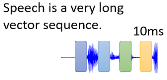
而每一个向量，其实只代表了 10 millisecond 的长度而已，所以如果今天是 1 秒钟的声音讯号，它就有 100 个向量了，5 秒钟的声音讯号，就 500 个向量了，你随便讲一句话，都是上千个向量了
所以一段声音讯号，你要描述它的时候，那个像这个 vector 的 sequence 它的长度是非常可观的，那可观的 sequence，可观的长度，会造成什么问题呢
你想想看，我们今天在计算这个 attention matrix 的时候，它的 计算complexity 是长度的平方
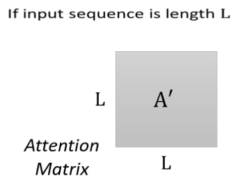
计算这个 attention matrix A′你需要做 L 乘以 L 次的 inner product，那如果这个 L 的值很大的话，它的计算量就很可观，你也需要很大的这个 memory，才能够把这个矩阵存下来
所以今天如果在做语音辨识的时候，一句话所产生的这个 attention matrix，可能会太大，大到你根本就不容易处理，不容易训练，所以怎么办呢
在做语音的时候，有一招叫做 Truncated Self-attention
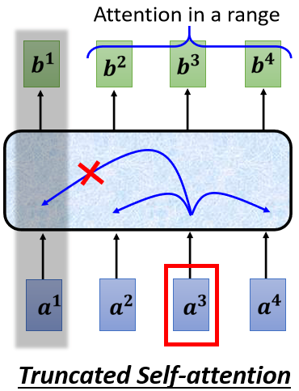
Truncated Self-attention 做的事情就是，我们今天在做 Self-attention 的时候，不要看一整句话，就我们就只看一个小的范围就好
那至于这个范围应该要多大，那个是人设定的
那为什么我们知道说，今天在做语音辨识的时候，也许只需要看一个小的范围就好，那就是取决于你对这个问题的理解，也许我们要辨识这个位置有什么样的phoneme，这个位置有什么样的内容，我们并不需要看整句话，只要看这句话，跟它前后一定范围之内的资讯，其实就可以判断
所以如果在做 Self-attention 的时候，也许没有必要看过一整个句子，也许没有必要让 Self-attention 考虑一整个句子，也许只需要考虑一个小范围就好，这样就可以加快运算的速度，这个是 Truncated Self-attention，
Self-attention for Image¶
那其实 Self-attention ，还可以被用在影像上，Self-attention
那到目前为止，我们在讲 Self-attention 的时候，我们都说 Self-attention 适用的范围是：输入是一个 vector set 的时候
一张图片啊，我们把它看作是一个很长的向量，那其实一张图片，我们也可以换一个观点，把它看作是一个 vector 的 set
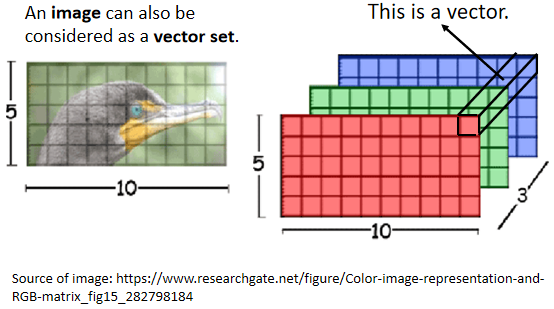
这个是一个解析度 5 乘以 10 的图片，那这一张图片呢，可以看作是一个 tensor，这个 tensor 的大小是 5 乘以 10 乘以 3，3 代表 RGB 这 3 个 channel
你可以把每一个位置的 pixel，看作是一个三维的向量，所以每一个 pixel，其实就是一个三维的向量，那整张图片，其实就是 5 乘以 10 个向量的set
所以我们其实可以换一个角度，影像这个东西，其实也是一个 vector set，它既然也是一个 vector set 的话，你完全可以用 Self-attention 来处理一张图片，那有没有人用 Self-attention 来处理一张图片呢，是有的
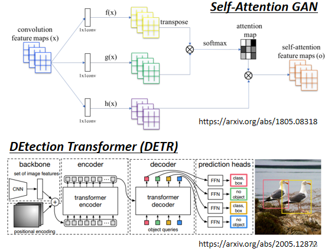
那这边就举了两个例子，来给大家参考，那现在把 Self-attention 用在影像处理上，也不算是一个非常石破天惊的事情，
Self-attention v.s. CNN¶
我们可以来比较一下，Self-attention 跟 CNN 之间，有什么样的差异或者是关联性
如果我们今天，是用 Self-attention 来处理一张图片，代表说，假设这个是你要考虑的 pixel，那它产生 query，其他 pixel 产生 key，
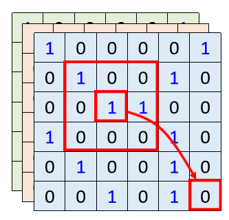
你今天在做 inner product 的时候，你考虑的不是一个小的receptive field的信息，而是整张影像的资讯
但是今天在做 CNN 的时候，，会画出一个 receptive field，每一个 filter，每一个 neural，只考虑 receptive field 范围里面的资讯
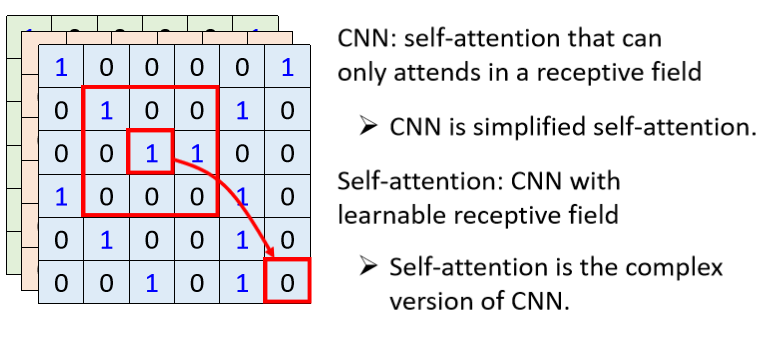
-
所以如果我们比较 CNN 跟 Self-attention 的话，CNN 可以看作是一种简化版的 Self-attention，因为在做CNN的时候，我们只考虑 receptive field 里面的资讯，而在做 Self-attention 的时候，我们是考虑整张图片的资讯，所以 CNN，是简化版的 Self-attention
-
或者是你可以反过来说，Self-attention 是一个复杂化的 CNN
在 CNN 里面，我们要划定 receptive field，每一个 neural，只考虑 receptive field 里面的资讯，而 receptive field 的范围跟大小，是人决定的，
而对 Self-attention 而言，我们用 attention，去找出相关的 pixel，就好像是 receptive field 是自动被学出的，network 自己决定说，receptive field 的形状长什么样子，network 自己决定说，以这个 pixel 为中心，哪些 pixel 是我们真正需要考虑的，那些 pixel 是相关的
所以 receptive field 的范围，不再是人工划定，而是让机器自己学出来
其实你可以读一篇 paper，叫做 On the Relationship，between Self-attention and Convolutional Layers
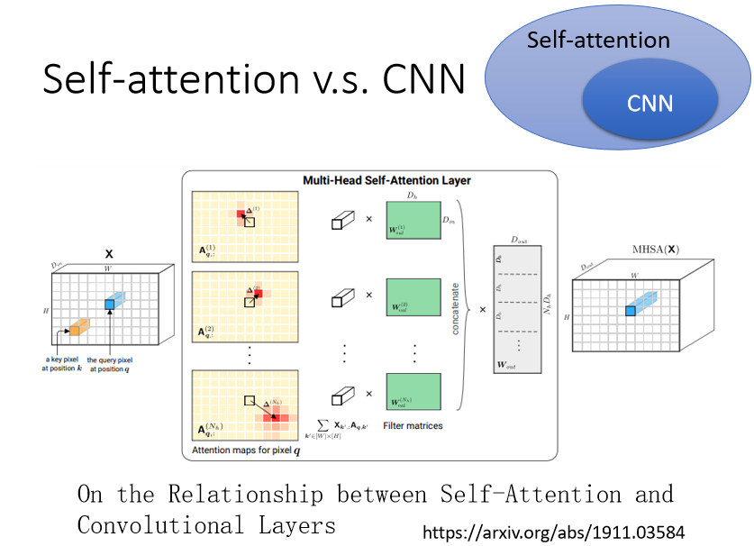
在这篇 paper 里面，会用数学的方式严谨的告诉你说，其实这个 CNN就是 Self-attention 的特例，Self-attention 只要设定合适的参数，它可以做到跟 CNN 一模一样的事情
所以 self attention，是更 flexible 的 CNN，而 CNN 是有受限制的 Self-attention，Self-attention 只要透过某些设计，某些限制，它就会变成 CNN
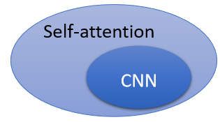
那这也不是很旧的 paper，你发现它放网络上的时间呢，是 19 年的 11 月，所以你知道这些，我们今天上课里面讲的东西，其实都是很新的资讯
既然Self-attention 比较 flexible，之前有讲说比较 flexible 的 model，比较需要更多的 data，如果你 data 不够，就有可能 overfitting
而小的 model，而比较有限制的 model，它适合在 data 小的，少的时候，它可能比较不会 overfitting，那如果你这个限制设的好，也会有不错的结果
如果你今天用不同的 data 量，来训练 CNN 跟 Self-attention，你确实可以看到我刚才讲的现象
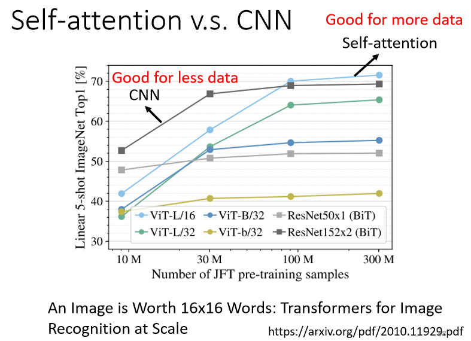
那这个实验结果，来自于 An image is worth 16 乘以 16 的 words，这个是 Google 的 paper，它就是把这个 Self-attention，apply 在影像上面
那其实把一张影像呢，拆成 16 乘以 16 个 patch，它把每一个 patch想象成是一个 word，因为一般我们这个 Self-attention，比较常用在 NLP 上面，所以他就说，想象每一个 patch 其实就是一个 word，所以他就取了一个很 fancy 的 title，叫做一张图呢，值 16 乘以 16 个文字
横轴是训练的影像的量，那你发现说，对 Google 来说 用的，所谓的资料量比较少，也是你没有办法用的资料量啦这边有 10 个 million 就是，1000 万张图，是资料量比较小的 setting，然后资料量比较大的 setting 呢，有 3 亿张图片，在这个实验里面呢，比较了 Self-attention 是浅蓝色的这一条线，跟 CNN 是深灰色的这条线
就会发现说，随着资料量越来越多，那 Self-attention 的结果就越来越好，最终在资料量最多的时候，Self-attention 可以超过 CNN，但在资料量少的时候，CNN 它是可以比 Self-attention，得到更好的结果的
那为什么会这样，你就可以从 CNN 跟 Self-attention，它们的弹性来加以解释
- Self-attention 它弹性比较大，所以需要比较多的训练资料，训练资料少的时候，就会 overfitting
- 而 CNN 它弹性比较小，在训练资料少的时候，结果比较好，但训练资料多的时候，它没有办法从更大量的训练资料得到好处
所以这个就是 Self-attention 跟 CNN 的比较，那 Self-attention 跟 CNN，谁比较好呢，我应该选哪一个呢，事实上你也可以都用，在我们作业四里面，如果你要做 strong baseline 的话，就特别给你一个提示，就是用 conformer，里面就是有用到 Self-attention，也有用到 CNN
Self-attention v.s. RNN¶
我们来比较一下，Self-attention 跟 RNN，RNN就是 recurrent neural network，这门课里面现在就不会讲到 recurrent neural network，因为 recurrent neural network 的角色，很大一部分都可以用 Self-attention 来取代了，
但是 RNN 是什么呢，假设你想知道的话，那这边很快地三言两语把它带过去，RNN 跟 Self-attention 一样，都是要处理 input 是一个 sequence 的状况
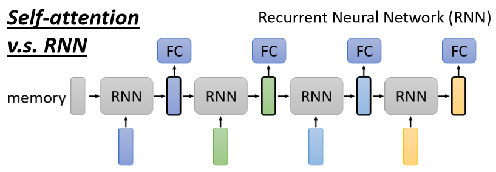
在 RNN 里面呢
- 左边是你的 input sequence，你有一个 memory 的 vector
- 然后你有一个 RNN 的 block，这个 RNN 的 block 呢，它吃 memory 的 vector，吃第一个 input 的 vector
- 然后 output 一个东西，然后根据这个 output 的东西，我们通常叫做这个 hidden，这个 hidden 的 layer 的 output
- 然后通过这个 fully connected network，然后再去做你想要的 prediction
接下来当 sequence 里面第二个 vector 作为 input 的时候，也会把前一个时间点吐出来的东西，当做下一个时间点的输入，再丢进 RNN 里面，然后再产生新的 vector，再拿去给 fully connected network
然后第三个 vector 进来的时候，你把第三个 vector 跟前一个时间点的输出，一起丢进 RNN，再产生新的输出，然后在第四个时间点
第四个 vector 输入的时候，把第四个 vector 跟前一个时间点，产生出来的输出，再一起做处理，得到新的输出，再通过 fully connected network 的 layer，这个就是 RNN
Recurrent Neural Network跟 Self-attention 做的事情其实也非常像，它们的 input 都是一个 vector sequence
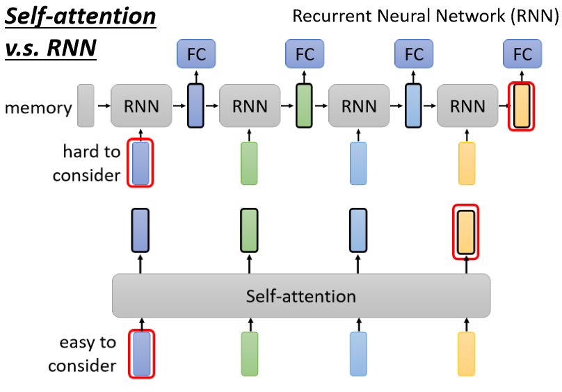
Self-attention output 是另外一个 vector sequence，这里面的每一个 vector，都考虑了整个 input sequence 以后，再给 fully connected network 去做处理
那 RNN 呢，它也会 output 另外一群 vector，这另外一排 vector 也会给 fully connected network 做进一步的处理，那 Self-attention 跟 RNN 有什么不同呢
当然一个非常显而易见的不同，你可能会说，这边的每一个 vector，它都考虑了整个 input 的 sequence，而 RNN 每一个 vector，只考虑了左边已经输入的 vector，它没有考虑右边的 vector，那这是一个很好的观察
但是 RNN 其实也可以是双向的，所以如果你 RNN 用双向的 RNN 的话，其实这边的每一个 hidden 的 output，每一个 memory 的 output，其实也可以看作是考虑了整个 input 的 sequence
但是假设我们把 RNN 的 output，跟 Self-attention 的 output 拿来做对比的话，就算你用 bidirectional 的 RNN，还是有一些差别的
-
对 RNN 来说，假设最右边这个黄色的 vector，要考虑最左边的这个输入，那它必须要把最左边的输入存在 memory 里面，然后接下来都不能够忘掉，一路带到最右边，才能够在最后一个时间点被考虑
-
但对 Self-attention 来说没有这个问题，它只要这边输出一个 query，这边输出一个 key，只要它们 match 得起来，天涯若比邻，你可以从非常远的 vector，在整个 sequence 上非常远的 vector，轻易地抽取资讯，所以这是 RNN 跟 Self-attention，一个不一样的地方
还有另外一个更主要的不同是，RNN 今天在处理的时候， input 一排 sequence，output 一排 sequence 的时候，RNN 是没有办法平行化的
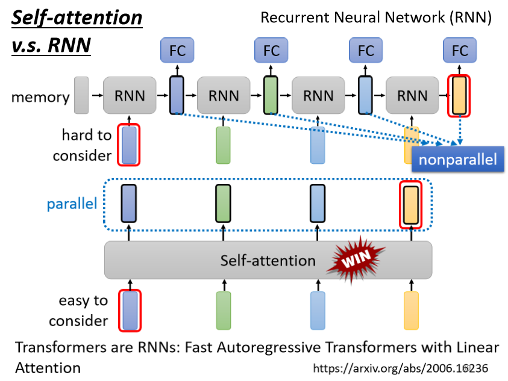
RNN 它今天 input 一排是 vector，output 另外一排 vector 的时候，它没有办法一次处理，没有办法平行处理所有的 output
但 Self-attention 有一个优势，是它可以平行处理所有的输出，你今天 input 一排 vector，再 output 这四个 vector 的时候，这四个 vector 是平行产生的，并不需要等谁先运算完才把其他运算出来，output 的这个 vector，里面的 output 这个 vector sequence 里面，每一个 vector 都是同时产生出来的
所以在运算速度上，Self-attention 会比 RNN 更有效率
那你今天发现说，很多的应用都往往把 RNN 的架构，逐渐改成 Self-attention 的架构了，如果你想要更进一步了解，RNN 跟 Self-attention 的关系的话，你可以看下面这篇文章，Transformers are RNNs，里面会告诉你说，Self-attention 你加上了什么东西以后，其实它就变成了 RNN，发现说这也不是很旧的 paper，这个是去年的六月放到 arXiv 上
所以今天讲的都是一些很新的研究成果，那 RNN 的部分呢，我们这门课就不会提到，假设你对 RNN 有兴趣的话，以下是这一门课之前的上课录影，那 RNN 的部分，因为这一次不会讲到，所以特别有做了英文的版本，RNN 呢 是中文英文版本，都同时有放在 YouTube 上面
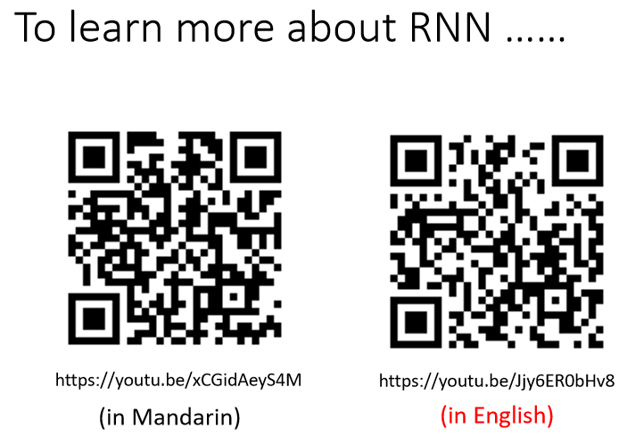
Self-attention for Graph¶
Graph 也可以看作是一堆 vector，那如果是一堆 vector，就可以用 Self-attention 来处理，所以 Self-attention 也可以用在 Graph 上面，但是当我们把 Self-attention，用在Graph 上面的时候，有什么样特别的地方呢，、
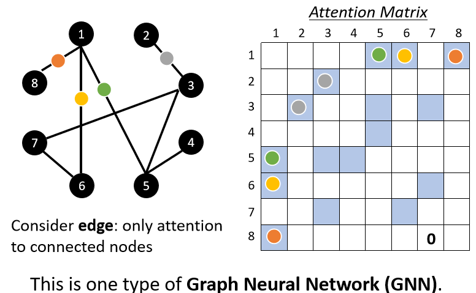
在 Graph 上面，每一个 node 可以表示成一个向量，但不只有 node 的资讯，还有 edge 的资讯，我们知道哪些 node 之间是有相连的，也就是哪些 node 是有关联的
我们知道哪些向量间是有关联，那之前我们在做 Self-attention 的时候，所谓的关联性是 network 自己找出来的，但是现在既然有了 Graph 的资讯，有了 edge 的资讯，那关联性也许就不需要透过机器自动找出来，这个图上面的 edge 已经暗示了我们，node 跟 node 之间的关联性
所以今天当你把 Self-attention，用在 Graph 上面的时候，你有一个选择是你在做这个，Attention Matrix 计算的时候，你可以只计算有 edge 相连的 node 就好
举例来说在这个图上，node 1 跟 node 8 有相连，那我们只需要计算 node 1 跟 node 8，这两个向量之间的 attention 的分数，那 1 跟 6 相连，所以只有 1 跟 6 之间，需要计算 attention 的分数，1 跟 5 有相连，所以只有 1 跟 5 需要计算 attention 的分数，2 跟 3 有相连，所以只有 2 跟 3 需要计算 attention 的分数，以此类推
那如果两个 node 之间没有相连，那其实很有可能就暗示我们，这两个 node 之间没有关系，既然没有关系，我们就不需要再去计算它的 attention score，直接把它设为 0 就好了
因为这个 Graph 往往是人为根据某些 domain knowledge 建出来的，那 domain knowledge 告诉我们说，这两个向量彼此之间没有关联，我们就没有必要再用机器去学习这件事情
其实当我们把 Self-attention，按照我们这边讲的这种限制，用在 Graph 上面的时候，其实就是一种 Graph Neural Network，也就是一种 GNN
那我知道 GNN，现在也是一个很 fancy 的题目，那我不会说 Self-attention 就要囊括了，所有 GNN 的各种变形了，但把 Self-attention 用在 Graph 上面，是某一种类型的 Graph Neural Network，那这边呢，一样我们也没有办法细讲了，GNN 这边坑也是很深啊，这边水是很深，那就放一下助教之前上课的连结
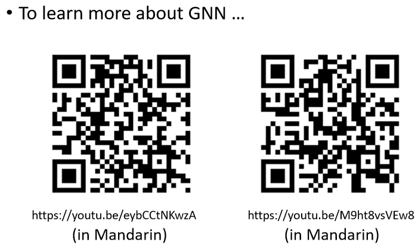
大概花了快三个小时，在讲 Graph Neural Network，而且其实还没有讲完，就告诉你说这个 Graph Neural Network，也是有非常深的技术，这边水也是很深，那这不是我们今天这一堂课可以讲的内容，好
More¶
其实Self-attention 有非常非常多的变形，你可以看一篇 paper 叫做，Long Range Arena，里面比较了各种不同的 Self-attention 的变形
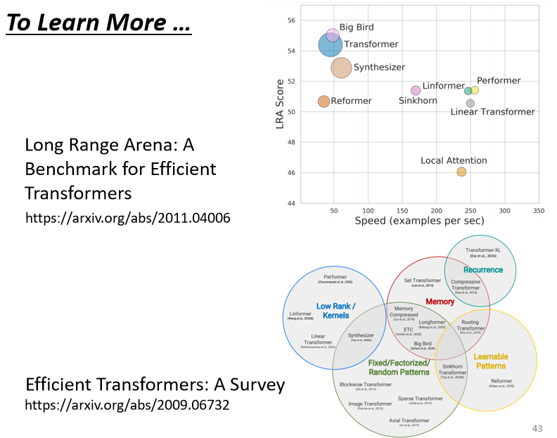
因为 Self-attention 它最大的问题就是，它的运算量非常地大，所以怎么样减少 Self-attention 的运算量，是一个未来的重点，可以看到这边有，各种各式各样 Self-attention 的变形
Self-attention 最早是，用在 Transformer 上面，所以很多人讲 Transformer 的时候，其实它指的就是这个 Self-attention，有人说广义的 Transformer，指的就是 Self-attention，那所以后来各式各样的，Self-attention 的变形都这样做，都叫做是什么 former，比如说 Linformer Performer Reformer 等等，所以 Self-attention 的变形，现在都叫做 xxformer
那可以看到，往右代表它运算的速度，所以有很多各式各样新的 xxformer，它们的速度会比原来的 Transformer 快，但是快的速度带来的就是 performance 变差
这个纵轴代表是 performance，所以它们往往比原来的 Transformer，performance 差一点，但是速度会比较快
那到底什么样的 Self-attention，才能够真的又快又好，这仍然是一个尚待研究的问题，如果你对 Self-attention，想要进一步研究的话，你还可以看一下，Efficient Transformers: A Survey 这篇 paper，里面会跟你介绍，各式各样 Self-attention 的变形。